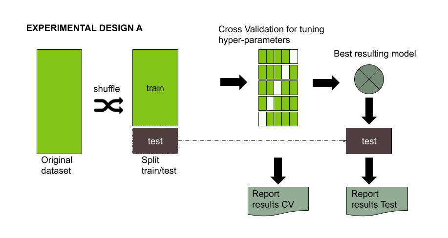
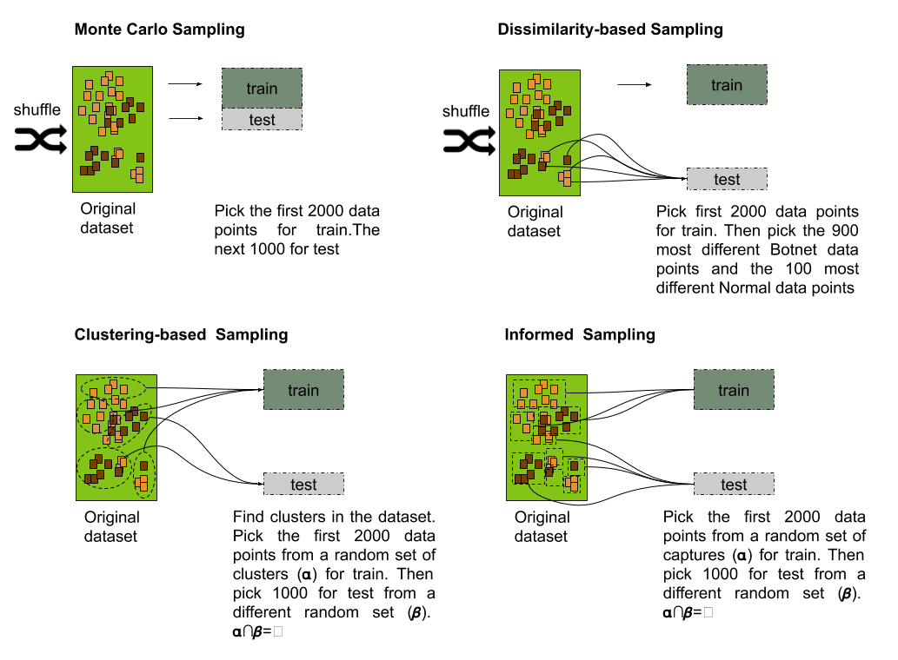
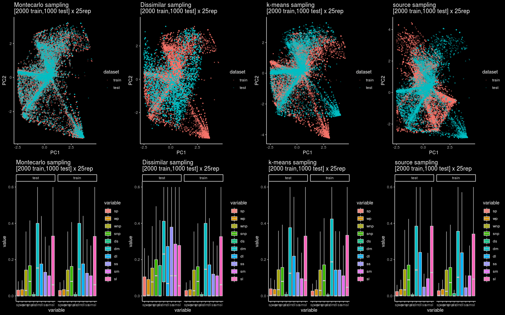

Beyond Random Split for Assessing Statistical Model Performance
A couple of years ago, I started to think about some issues in the standard experimental design for evaluating the performance of a machine learning model
The standard experimental design is pretty simple, a dataset is split usually in a 70/30 ratio. The 30% of the data, referred to as the testing set, should be left aside and ideally never used until model tuning has finished. On the other hand, 70% of the data, referred to as the training set, could be used to train and optionally validate the model or conduct a hyperparameter search for model tuning. (You can check two articles about this here and here).

Figure 1: Experimental design for evaluating the performance of a Machine learning model
I used to think that training and testing datasets needed some similarity (both have to follow the same distribution). Otherwise, it would be impossible for the model to perform well on the testing set. (And please, don’t get me wrong, that is still necessary under most of the usual scenarios). However, if the examples are too similar in both datasets, then it could be impossible to assure an accurate generalization performance for the model. Moreover, the model’s overall generalization performance could be overestimated.
The usual train/test random split of a dataset is not always the best approach for estimating performance generalization under some scenarios. A common situation is when predicting patient outcomes. In these cases, the model should be constructed using certain patient sets (e.g., from the same clinical site or disease stage), but then need to be tested on a different sample population (You can check Kuhn 2013). Another situation is the fact that it is not always possible to have access to a representative sample. Detecting a non-representative sample is possible through applying several techniques, such as cross-validation, learning curves, and confidence intervals, among others. Unfortunately, in many cases, a non-representative sample is all we have to generate a machine learning model. In those cases when a sample does not follow the same population distribution, a random split might not provide the required level of representativeness for rare or elusive examples in a testing set. As a result, the standard metrics could overestimate the performance of the model. It is possible to deal with the lack of representativeness in classification problems using a stratification strategy. However, when rare examples are not labeled, a predictor-based sampling strategy will be necessary

Figure 2: Procedure used for generating the training and testing sets for the four splitting strategies: Monte Carlo, Dissimilarity-based, clustering-based and informed-based.
Monte Carlo
You randomly select (without replacement) some fraction of your data to form the training set, and then assign the rest of the points to the test set. This process is then repeated multiple times, generating (at random) new training and test partitions
The usual sampling strategy for model evaluation consists of taking a uniformly random sample without the replacement of a portion of the data for the training set, while all other data points are added to the testing set. Such a strategy can be thought of as a special case of the Monte Carlo Cross Validation (MCCV) with just one resample instance. The Monte Carlo (MC) splitting strategy guarantees the same distribution across not only the response but also the predictor variables for training and testing sets.
The code below generates 25 samples of the CTU19 dataset using MCCV. The CTU19 is a dataset with 19 network traffic captures taken from the Malware Facility Capture Project. Notice here I considered only 3000 observations from the total number of observations of the dataset. I did that just because I wanted to reduce the time for training the models. The number 3000 is completely arbitrary and under other circumstances a procedure like the one I describe in this post should be done on the dataset.
workdir <- "/tmp"
ctu19_vectorized <-
read_csv(
"https://www.dropbox.com/s/0ziry2zi6gsgpi6/ctu19_filtered_fv.csv?dl=1"
)
# Shuffle the dataset and pick 2000 for training and 1000 for testing.
resample_mc_cv<-function(x){
train_ind <- sample(seq_len(nrow(x)), size = nrow(x))
train<-x[train_ind[1:2000],]
test<-x[train_ind[2001:3000],]
return (list(train=train,test=test))
}
# Repeat 25 times.
for (iter in seq(25)){
resample_mc_cv_datasets<-resample_mc_cv(ctu19_vectorized)
readr::write_csv(resample_mc_cv_datasets$train,
path=paste0(workdir,
"sample-group-mc-train-",iter,".csv"))
readr::write_csv(resample_mc_cv_datasets$test,
path=paste0(workdir,
"sample-group-mc-test-",iter,".csv"))
}
In comparison with Monte Carlo, the remaining splitting strategies provide the steps to create different test sets that include rare or elusive examples while maintaining similar properties across the predictor space as the training set.
Dissimilarity-based
The simplest method to measure dissimilarity consists of using the distance between the predictor values for two samples. The larger the distance between points, the larger indicative of dissimilarity. The application of dissimilarity during data splitting requires a set initialized with a few samples. Then, the dissimilarity between this set and the rest of the unallocated samples can be calculated. The unallocated sample that is most dissimilar to the initial set would then be added to the test set.
Below is the code for performing a Dissimilarity-based sampling strategy. The function resample_maxDissim receives a dataframe with observation. An initial train set is sampled following the same approach as in MCCV, but the test set is generated by calculating the most distant points from the training set. The function responsible is maxDissim, which was provided by the R caret package.
workdir <- "/tmp"
ctu19_vectorized <-
read_csv(
"https://www.dropbox.com/s/0ziry2zi6gsgpi6/ctu19_filtered_fv.csv?dl=1"
)
resample_maxDissim <- function(x) {
train_ind <- sample(seq_len(nrow(x)), size = nrow(x))
train <- x[train_ind[1:2000], ]
test_ind <-caret::maxDissim(train[, 1:10],
x[train_ind[2001:nrow(x)], 1:10],
n = 1000,
verbose = 1)
test <- x[test_ind, ]
return (list(train = train, test = test))
}
# Repeat 25 times.
for (iter in seq(25)){
resample_mc_cv_datasets<-resample_maxDissim(ctu19_vectorized)
readr::write_csv(resample_mc_cv_datasets$train,
path=paste0(workdir,
"sample-group-diss-train-",iter,".csv"))
readr::write_csv(resample_mc_cv_datasets$test,
path=paste0(workdir,
"sample-group-diss-test-",iter,".csv"))
}
Dissimilarity splitting proved to be useful over chemical databases’ splitting. Nevertheless, this method strongly depends on the initial set used to calculate the dissimilarity of the rest of the samples, prompting problems in cases of small datasets where the initial set is not representative enough.
Another problem with the dissimilarity approach is that there is no guarantee the sampling strategy includes observations for all the classes. In that case, you will need to do some kind of stratification (i.e. sampling the most different observations for each class)
Informed-based
A well-known non-random split strategy consists of using some kind of grouping information from the data to restrict the set of samples used for testing. The general idea after splitting the data is that members of a group present in the training set should not be included in the testing set. Such strategies are well-known in areas such as Medicine and Finances, where testing should be conducted on a different patient group, or, in the finances field, where the model should be tested on a time series from a different time period.
workdir <- "/tmp"
ctu19_vectorized <-
read_csv(
"https://www.dropbox.com/s/0ziry2zi6gsgpi6/ctu19_filtered_fv.csv?dl=1"
)
resample_informed<-function(x){
sources<-x %>% group_by(source) %>% count() %>%
select(source) %>%
unlist() %>%
unname()
sources_ind<-sample(19,10,replace = F)
sources[sources_ind]
sources[-sources_ind]
train_pool<-x %>% filter(source %in% sources)
test_pool<-x %>% filter(!(source %in% sources))
train_ind <- sample(seq_len(nrow(train_pool)), size = nrow(train_pool))
test_ind <- sample(seq_len(nrow(test_pool)), size = nrow(test_pool))
train<-train_pool[train_ind[1:2000],]
test<-test_pool[test_ind[1:1000],]
return (list(train=train,test=test))
}
for (iter in seq(25)){
resample_informed_cv_datasets<-resample_informed(ctu19_vectorized)
readr::write_csv(resample_informed_cv_datasets$train,
path=paste0(workdir,
"sample-group-informed-train-",iter,".csv"))
readr::write_csv(resample_informed_cv_datasets$test,
path=paste0(workdir,
"sample-group-informed-test-",iter,".csv"))
}
Clustering-based
The clustering split strategy follows the same principle of the informed split. However, there could be situations where no grouping information can be extracted from the samples to perform an informed split. In these cases, the application of a clustering algorithm could be used to replace the missing information. The labels generated by this procedure will be then used for performing a group split similarly to the informed split strategy.
workdir <- "/tmp"
ctu19_vectorized <-
read_csv(
"https://www.dropbox.com/s/0ziry2zi6gsgpi6/ctu19_filtered_fv.csv?dl=1"
)
ctu19_vectorized_kmeans<-kmeans(ctu19_vectorized[,1:10],
nstart = 5,
centers = 10)
ctu19_vectorized_cluster<- ctu19_vectorized %>%
tibble::add_column(cluster=ctu19_vectorized_kmeans$cluster)
resample_kmeans<-function(x){
cluster_ind<-sample(20,10)
train_pool<-x %>% filter(cluster %in% cluster_ind)
test_pool<-x %>% filter(!(cluster %in% cluster_ind))
train_ind <- sample(seq_len(nrow(train_pool)), size = nrow(train_pool))
test_ind <- sample(seq_len(nrow(test_pool)), size = nrow(test_pool))
train<-train_pool[train_ind[1:2000],]
test<-test_pool[test_ind[1:1000],]
return (list(train=train,test=test))
}
for (iter in seq(25)){
resample_kmeans_cv_datasets<-resample_kmeans(ctu19_vectorized_cluster)
readr::write_csv(resample_kmeans_cv_datasets$train,
path=paste0(workdir,
"sample-group-kmeans-train-",iter,".csv"))
readr::write_csv(resample_kmeans_cv_datasets$test,
path=paste0(workdir,
"sample-group-kmeans-test-",iter,".csv"))
}
Let’s see how the four splitting strategies impact a particular dataset. In this case, a network security dataset for botnet detection composed of nineteen network captures published by the stratosphere IPS research group at CTU
Let’s visualize the differences between the four sampling strategies using a a PCA projection of the training and the testing dataset.

Figure 3: 2D projection and boxplot distribution for the 25 pairs of training and testing datasets for each splitting strategy
An interesting thing about the plot is that if we look at the boxplot it is not easy to spot a difference between each splitting strategy. However, the 2D projection using PCA shows clearly the differences between the four approaches.
### 2D Representation using PCA
create_2d_viz<-function(train,test,title="notitle"){
train_pca <- prcomp(train,center=TRUE,scale.=TRUE)
test_pca <- predict(train_pca,test)
train <- data.frame(train_pca$x,dataset="training")
test <- data.frame(test_pca$x, dataset="testing")
dataset<-rbind(train,test)
ggplot(dataset) +
geom_point(aes(x=PC1,y=PC2,color=dataset),alpha=0.2,size=0.5)+
ggdark::dark_theme_classic()+
theme_bw()+
labs(title=title)+
theme(legend.position="bottom")
}
The similarities between training and testing sets are clearly observable for the Monte Carlo CV strategies, while the remaining strategies provide clear differences, being the dissimilarity-based approach the one observing the most of it.
Just a few more words…
In theory, a simple Cross Validation (CV) approach would be enough for estimating the generalization error of a model. Unfortunately, statisticians have found considerable issues with these approaches in the last years. It seems that the estimation provided by CV has severe flaws. (Hastie and Tibshirani have discussed some of them in a recent paper submitted to arxiv.)
Theoretical frameworks used for estimating the generalization are still an important research topic. Despite the industry is not really interested in this problem.
Estimating the generalization error of a model is not easy. The methods described above are simple ideas (some of the well-established ideas) to have a practical intuition on how well and how badly the model will perform on unseen examples.
Informed and dissimilarity-based strategies could become handy for particular problems, while a cluster-based strategy is just a compromise solution when you don’t have information for doing the split.
The idea of using a different distribution in testing could seem awkward at first but is not as unusual as you may think. Moreover, Andrew Ng in the book Machine Learning Yearningproposes an approach where the independent testing set should have a different distribution from training and dev datasets.
References
[1] Beyond Random Split for Assessing Statistical Model Performance. A report we submitted to arxiv where we evaluated a random forest model on the 4 different splitting strategies.
[2] Applied predictive modeling. A book by Max Khun & Kjell Johnson, in Chapter 20 “Factors that can affect model performance”, discuss some other problems and possible solution to asset model performance. In particular subsection 20.5 When Should You Trust Your Model’s Prediction?